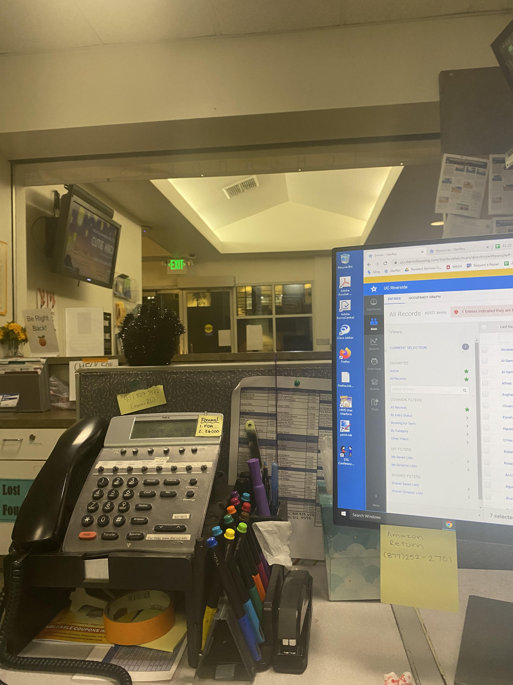

Lupita Sanchez
Hello! My name is Lupita Sanchez and I am a Sophomore in college pursing a bachelor's degree in Media and Culture Studies at UC Riverside and currently working as an HSA, Housing Services Ambassador, at my university.
I have a passion to learn more about the social media industry and try to involve myself in clubs or job opportunities to get more experience from others of desired career. However, on my free time, I like to play games and watch movies to destress from a hardworking day.
I also have a passion to learn more about the video game industry and hopefully, someday be part of a team in which I can be part of the process of promoting or advertising a future game at a well known company such as Riot or Epic Games.
Over the past year, I became more interested in Kpop and I enjoy learning the choreography of my favorite artists. I was happy to learn there was a Kpop dance club called Tartan Soul at my university and through the club I made new friends, which you can see a photo in my portfolio.
I am also trying to join more clubs at my university such as Highlander Gaming, which is a gaming and esports club and also be apart of Hooks for Hope which is a crochet club where you can create a plushie or a scarf and donate it to children around the world.
Through this I am able to involve myself in volunteer work and have a chance to do an internship to get experience for my future career.
Working as a HSA has given me a great experience in which I can learn more in a professional environment than I was able to at my last two jobs.
Being a HSA, I am capable of gaining personal growth and leadership as I gain experience from others while also being able to give my advice and experience to others as well.
Experience
Housing Services Ambassador
• Answer Resident's questions
• Handle processing and issues packages
• Experience with StarRez, Google Sheets, Google Forms
Student Assiant
• Worked on a variety of tasks from food and beverage preparation to dishwashing and cleaning
• Work with co-workers to get necssities and serve customers
Sales Associate/Replenishment
• Maintain knowledge of current promotions, aid customers by finding clothing items and checking inventory for items
• Assisted many customers per day by responding to inquiries and locating products
• Entry-level cashiering experience
• As a replenishment team member, I worked with others to replenish a number of items that are needed to reach our daily goal
and carry selected merchandise out to the floor so customers could select needed items
Education
University of California - Riverside
Ellen Ochoa Prep Academy
Portfolio
